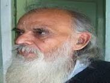

Others
Sunderlal Bahuguna
Sunderlal Bahuguna (born 9 January 1927) is a noted Garhwali environmentalist, Chipko movement leader and a follower of Mahatma Gandhi's philosophy of Non-violence and Satyagraha. The idea of chipko movement was of his wife and the action was taken by him. For years he has been fighting for the preservation of forests in the Himalayas, first as a member of the Chipko movement in the 1970s, and later spearheaded the Anti-Tehri Dam movement starting 1980s, to early 2004. He was one of the early environmentalists of India, and later he and people associated with the Chipko movement later started taking up environmental issues, like against large dams.
Chandi Prasad Bhatt
Chandi Prasad Bhatt (born 1934) is an Indian Gandhian environmentalist and social activist, who founded Dasholi Gram Swarajya Sangh (DGSS) in Gopeshwar in 1964, which later became a mother-organization to the Chipko Movement, in which he was one of the pioneers, and for which he was awarded the Ramon Magsaysay
Award for Community Leadership in 1982, followed by the Padma Bhushan in 2005. Today he is known for his work on subaltern social ecology, and considered one of India's first modern environmentalist. In 2013, he was awarded the Gandhi Peace Prize.
Yashodhar Mathpal

Yashodhar Mathpal (born 1939) is an Indian archaeologist, painter, curator, Gandhian and Rock art conservationist. He is most known for his study of cave art, especially in Bhimbetka rock shelters, Barechhina (Uttarakhand) and Kerala. He founded the Folk Culture Museum (Lok Sanskriti Sangrahalaya) in Bhimtal,
Nainital district, in 1983.The museum houses artifacts, folk paintings, rock art and prehistoric objects. The museum also documents oral and written traditions and folklore of the region, besides providing training in rare traditional arts and crafts. He was awarded the Padma Shri, fourth-highest civilian honour by Government of India in 2006.
Khadg Singh Valdiya
Khadg Singh Valdiya is an Indian geologist and a former vice chancellor of Kumaon University, known for his contributions in the field of geodynamics. A 2007 recipient of Padma Shri, he was honoured again by the Government of India in 2015 with Padma Bhushan, the third highest Indian civilian award. Internationally recognized for his path-breaking work in the fields of Geology and Environmental Science, Prof. Valdiya was born to Dev Singh Valdiya and Nanda Valdiya on 20 March 1937 in Myanmar. In 1947 his family returned to their hometown in Pithoragarh in the Indian state of Uttarakhand. He did his schooling in Pithoragarh. Valdiya has been involved with the establishment of such geological institutions as Wadia Institute of Himalayan Geology, Dehradun, Central Himalayan Environmental Association, Nainital, G. B. Pant Institute of Himalayan Environment and Development, Almora, and the Geology Department of the Kumaon University. He is an elected fellow of Indian National Science Academy, National Academy of Sciences, India (FNASc), Indian Academy
of Sciences(FASc), and the Third World Academy of Sciences (FTWAS) and is a fellow of Geological Society of India, Geological Society of America and Geological Society of Nepal. He has served as a member of the Scientific Advisory Council to the Prime Minister of India. He has written over 110 research papers, authored 20 books, edited 9 books and penned 40 articles in Hindi towards popularization of science.